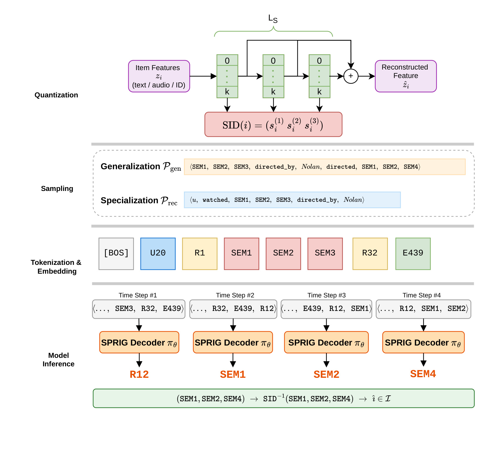
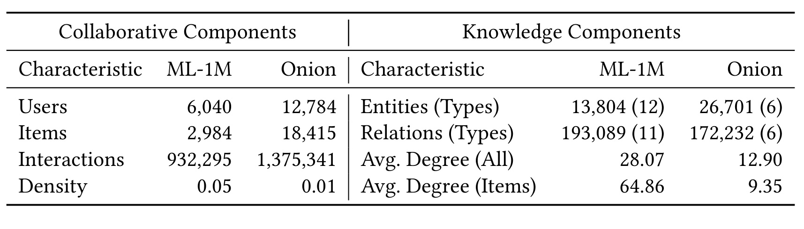
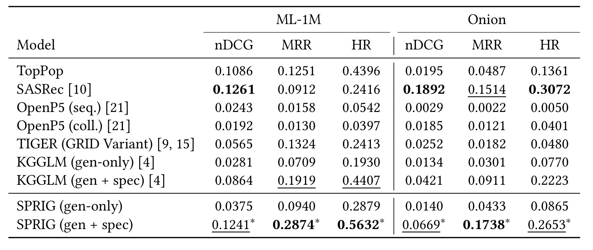

SPRIG：用语义ID改写知识图谱路径的生成式推荐
论文：SPRIG: Semantic-ID-enhanced Paths for Knowledge Graph-based Generative Recommendation。第一作者 Justin Hangöbl，主要机构为约翰开普勒大学计算感知研究所；合作机构包括 Albatross AI、Criteo AI Lab 与林茨理工学院。首发时间为 2026 年 10 月 5 日 16:04:55 UTC，本文精读日期为 2026 年 10 月 7 日。来源为 arXiv 官方论文入口，原文为六页的 CIKM 2026 论文版本。作者 代码仓库 已核验可访问，本轮未运行代码。下文数字来自原文表格和正文，解释与复现判断在对应段落标明。
1. 背景和问题
语义ID模型缺少关系依据，而知识图谱生成式推荐仍以任意、不透明的物品token表示物品，限制了参数共享与泛化能力。
这句话对应原文摘要中的核心问题。生成式推荐把“为目录中的每个物品计算分数”改成“直接产生物品标识”。模型可以根据用户交互历史预测下一物品，也可以根据知识图谱生成一条到达物品的关系路径。但只要每件物品依然对应一个独立的原子标识，目录扩张就会推动物品词表扩大，模型也必须分别学习每个标识的含义。相邻的数字编号没有相邻的语义，两个电影的编号即使连续，也不能告诉模型它们是否由同一导演创作，是否属于同一题材。这会把“物品表示”“关系上下文”“词表规模”三个相互牵连的问题同时留在生成器里。
语义ID路线试图解决表示与规模问题。它先把物品文本或音频转成内容向量，再把向量量化为短小的离散码序列。若量化得到层次结构，第一层可以表达粗粒度内容相似性，之后的层逐步细化差别。原文用《盗梦空间》和《星际穿越》说明这一点：二者可以共享前两层代码，只在最后一层不同；《芭比》则从第一层起使用另一组代码。共享前缀让多个物品共同训练同一组token参数，也让物品输出空间由有限码本构成。这与对每件物品从零学习独立嵌入不同，其吸引力在于语义相似的物品能够借助共同代码交换学习信号。
不过，内容相似不等于推荐依据完整。两个物品在文本或音频空间中接近，并不直接表示它们在用户兴趣、导演、艺术家、专辑或标签关系中处于什么位置。语义ID的前缀也未必具有可以直接读出的自然语言含义。纯粹使用SID的序列模型可以学习消费顺序，但没有显式的关系图作为约束和上下文。当用户喜欢某位导演，或者音乐推荐需要沿艺术家与流派连接不同曲目时，仅有离散内容码不能替代这种关系信息。这正是论文把知识图谱作为另一类互补信号的动机，而不是宣称SID自身已经学会所有关系。
知识图谱路径推荐沿着用户、物品与属性实体的边进行推理。一条路径可能从用户看过的电影出发，经过导演，再到另一部作品；输出同时包含目标物品和关联链。早期路线用强化学习代理逐步走图，后续路径语言建模把实体和关系编码为token，让自回归模型生成路径。KGGLM进一步采用“通用图路径预训练，再用推荐路径微调”的两阶段设计。这个结构为推荐提供关系依据，也把图上的结构规律变成可学习的序列分布。但KGGLM仍把物品表示为原子ID，因此图能表达作品的关联，生成模型的物品token却不能直接表达内容相似性，参数共享的机会仍没有充分利用。
SPRIG的选择是直接修改路径语言的表示方式：每次路径中出现物品实体，就把它展开为对应的SID序列，而用户、属性实体和关系仍保留各自token。 它没有先生成一个纯SID列表，再用另一套图模型给列表补解释；也没有增加一个独立的内容编码器参与每次线上解码。内容量化在离线完成，之后统一路径序列交给同一个因果Transformer学习。这样，导演等属性关系和物品的内容代码处于同一上下文中，模型既能沿关系链学习“哪些作品相连”，也能通过代码共享学习“哪些作品相似”。论文的技术贡献因此集中在表示接口的统一，而不是另造一种注意力结构。
两条研究问题需要分开读。RQ1问：在保持图谱和生成器大体一致时，把不透明物品token换成语义标识是否改善推荐质量。RQ2问：共享码空间能否减少输出词表而不损害质量。第一个问题要靠与KGGLM的受控比较回答，不能仅靠击败较弱的OpenP5来论证；第二个问题既要看物品token数量，也要看总参数、FLOPs与精度，不能把词表倍数直接当成服务成本倍数。论文在电影与音乐两个领域提供实证，尤其音乐目录比电影目录更大、更稀疏，使输出表示压缩的收益更容易观察。
需要提前划清证据边界。作者提出SID可能让新物品共享已知物品的前缀，因此适合研究冷启动；但本论文没有冷启动专用划分，也没有验证没有训练交互边的新物品如何被采样与到达。作者同样承认可读解释尚未完成：关系路径本身提供了一种结构线索，末端SID却比命名物品更难被人理解。冷启动泛化和解释忠实性在这篇论文中是研究方向，不是已经交付并验证的功能。 这一区分也影响工程判断：若当前任务的主要痛点是新物品即时入库或面向用户提供理由，还需要额外实验与设计，不能仅凭框架名称就替换现有方案。
从已有方法的关系看，SPRIG采用TIGER风格的内容码，结合GRID关于残差量化的实践经验，并延续KGGLM的路径预训练范式。创新点在于把原本分别处理内容和关系的两种生成式表示放进单一语言。它保留用户ID与属性ID，因此并没有把整个系统变成完全与目录和用户数量无关的固定参数模型。更准确的理解是：物品相关词表项从每物品一个，变为每层码本一组；其他实体项仍随图谱增长。理解这一局部而明确的改变，才能判断论文何处解决了扩展性问题，何处还需要新的压缩或建模方法。
另一个有用的区分是“共享代码参数”与“共享用户偏好”。两部电影共用语义前缀，只说明它们通过内容量化形成共同表示，不意味着喜欢其中一部的用户必然喜欢另一部。用户和关系上下文仍要改变条件概率，让同一代码在不同用户路径中获得不同权重。图谱路径让内容相似性进入个性化条件，而推荐微调把真实消费信息接入这些条件。若省略这一步，系统可能只是重复内容近邻，无法分辨用户偏好。SPRIG把两种信息放在一起的价值，要由最终推荐指标支持，而不能从码前缀的可视化相似性直接推出。
2. 方法
2.1 基础定义与层次语义标识
原文方法先定义异构知识图谱，再定义SID。设用户、物品和属性实体分别为 $\mathcal U,\mathcal I,\mathcal A$，则实体集合为 $\mathcal E=\mathcal U\cup\mathcal I\cup\mathcal A$。图谱写为 $\mathcal G=(\mathcal E,\mathcal R,\mathcal T)$，其中三元组集合 $\mathcal T\subseteq\mathcal E\times\mathcal R\times\mathcal E$，用户消费物品的行为也是一类三元组 $(u,\mathrm{UI},i)$。原图路径是实体、关系交替出现的序列，每一步都对应图中的实际三元组。符号解释：$e_\ell$是路径第$\ell$个实体，$r_\ell$是将相邻实体相连的关系，$L$是关系跳数：
这里的 $L$ 是图跳数，后面SID展开后的token长度是另一个量。混淆二者会导致错误的上下文预算。原始三跳路径不等于只有三个生成token；除了关系和非物品实体，路径中的每件物品还会展开为多个代码。SPRIG也因此缩短推荐图路径，并降低学习率，而不是假定替换token后训练长度完全不变。
物品 $i$ 的内容向量 $z_i$ 被层次残差量化为 $L_s$ 个代码，每层有 $K$ 个码项。符号解释：$s_i^{(\ell)}$是第$\ell$层的离散代码，$L_s$是代码层数，$K$是每层码本规模；内容量化先从粗粒度近似开始，再依次细化剩余误差，使相似内容能共享前层码，末层进一步区分具体物品：
逐层残差量化的直观含义是先用一个码项近似内容向量，再用下一层码项描述剩余误差，所以后层对前层进行细化。相似内容更可能共享较长的前缀，这使不同物品的训练样本能够更新共同的代码参数。SPRIG不限定量化器，兼容RVQ、残差K-means或RQ-VAE，只要求输出一致的SID接口。本文实验采用离线残差K-means，三层、每层256个码项；电影特征来自T5，音乐特征来自musicnn。量化模块的输入是内容嵌入，输出是持久化的离散代码及反向物品映射，路径模型在训练时读取这些代码，而不是与量化器端到端共同学习。
代码序列既承担压缩接口，也承担跨物品共享接口。 压缩只需代码组合能标识目录物品；共享则要求代码的邻近或共同前缀与任务相关的内容相似性一致。原文音频特征消融表明后者不能自动保证：量化算法差异较小，而底层内容表示质量影响更明显。因此SID不是无条件的信息增强，有用性依赖输入内容特征。实际实现还必须维护SID到目录物品的逆映射；原文没有详述编码冲突的独立处理机制，本笔记也不补写额外“唯一化token”作为作者方法。
2.2 语义ID增强的知识图谱路径
原文2.2先给出两类采样语料，再给出路径改写。通用预训练语料 $\mathcal P_{\mathrm{gen}}$ 从任意物品或属性实体出发，遍历纯知识图谱关系，排除用户与物品交互边，且不要求终点是物品。它的目的在于学习内容代码与属性实体共同出现的结构规律，不直接使用协同消费信号。推荐微调语料 $\mathcal P_{\mathrm{rec}}$ 从用户出发，允许经过完整图谱的各种边，并最终抵达目标物品。二者共享同一个图和词表，但起点约束、可遍历边和终点约束不同，产生不同监督内容。
关键改写覆盖路径中的每一次物品出现，不仅是末端目标。符号解释：$\widetilde e_\ell$是改写后的实体表示，$\widetilde p$是完整改写路径，判断条件仅检查原实体是否属于物品集合；关系及其他实体保持原样，物品则变成一个多代码片段，生成器随后按片段中的每个代码位置建模。原文公式（1）为：
例如“用户—看过—盗梦空间”中的物品实体变成三个语义代码，后续“由谁导演”“导演了什么作品”等关系仍以关系token和导演实体token连接。如果《盗梦空间》与《星际穿越》共享前两层代码，这种共享既在路径中间作为上下文出现，也在终点生成时起作用。模型可以在导演实体之后生成一个熟悉的语义前缀，再细化到具体影片；它学习的是关系与内容编码联合分布，而不是分别算关系分数和内容相似度再线性融合。
统一词表由代码、非物品实体、关系和特殊符号构成。每层代码应有独立层级身份，否则相同数字在不同量化层会被误当成同一语义。原文明确物品代码项总数为 $L_sK$，其余实体项为用户与属性：
这条式子直接约束效率结论。$3\times256=768$只表示物品SID词表，不是整个模型的词表大小。用户、演员、艺术家、专辑、标签等原子实体并未在此方案中自动压缩。对于属性或用户特别多的图谱，这些部分仍可能主导参数。另一方面，码的组合数与码本token数也不同，不能因只有768个代码token就认为最多只能表示768件物品；多层代码的组合能够承载更大的目录。目录可表示性、编码碰撞与生成合法性仍需实际映射表来管理。
2.3 解码器训练与路径生成

Figure 1按自上而下的流程串联量化、路径采样、token化以及解码。顶端由物品内容向量得到三层SID，中间展示通用路径和用户推荐路径两种语料；下一行把用户、关系、代码、属性放进同一个序列，底部按时间步预测关系与代码，最后通过逆SID映射得到物品。图中“输出一条路径”与“从末端代码识别物品”是两个相连但不同的步骤，不能把框架误读为直接从用户一次性预测物品列表。图的电影示例主要帮助解释共享前缀，底部多个解码器方框表示同一因果模型在不同时间步运行，不是串联四个独立模型。框架图也没有引入专门的自然语言解释模块，因此沿图生成的结构路径不能直接等同于经过忠实性评估的用户解释。
改写后的路径成为 $\widetilde p=\langle t_1,\ldots,t_T\rangle$。因果Transformer $\pi_\theta$ 自回归分解其概率：
原文公式（2）在路径语料上最小化负对数似然。符号解释：$\mathcal P$是所用路径语料，$|\mathcal P|$为路径数量，内层求和覆盖该路径全部token，外层平均按路径条数计算；训练对每个位置的真实下一个token提供监督，而不是只在路径终点物品处施加一个推荐损失：
所有类型的token都由同一个目标监督：用户、关系、属性与代码并没有各自独立损失。预训练以通用路径替换上式中的语料，微调则在同一组参数上继续用推荐路径训练。输入是完整的训练路径，因果掩码确保当前位置只能读取前文；输出是每个位置的下一token分布。训练利用已知路径的逐token监督，推理则从用户与交互关系前缀开始不断采样或搜索，前文来自模型已经生成的token。这一区别解释了为什么较好的单步似然未必保证终点召回：早期代码或关系选择会限制之后能够到达的目录物品。
推理前缀为起始符、用户标识、用户物品关系。论文采用多样化束搜索，生成三跳用户到物品路径，从路径末端取出SID并反向查找物品。同一物品可能被多条路径抵达，此时按该物品的最高路径对数似然排序，而非把所有路径概率相加。换言之，多条证据不会直接累积成更高物品分数；系统选用最有把握的那条路径。此实现选择会影响热门或高连接物品的偏好，值得在后续研究中与路径聚合方式比较，但本论文没有报告这项消融。
图谱路径语言建模依赖合法关系与终点识别，作者沿用KGGLM路线，并在事实包中核验受约束路径生成；六页正文主要公开束搜索配置，没有把所有合法SID前缀筛选细节写成新的算法。因而复现时需要从作者仓库核对图合法性掩码、逆映射与特殊符号处理。“输出物品词表变小”同时伴随“每件物品需要多步生成”，二者形成真实折中。 训练FLOPs下降可以支持表示压缩收益，但线上端到端时延还受束宽、路径token数量、去重与查表影响，原文没有提供这些环节的完整实测延迟。
从模型边界看，训练目标没有显式要求每层代码对应一个属性，也没有额外优化路径对人类解释是否可信。因此同一前缀可能在多个关系上下文中出现，模型学到的是概率关联。内容量化器离线生成固定标识，路径模型随后学习它们的条件分布，二者之间缺乏端到端梯度耦合。这个解耦让已有KG生成器较易接入SID，但也意味着内容码一旦更新，路径序列与逆映射需要保持版本一致。原文没有提出在线更新协议，这属于由接口设计推出的部署注意点，不能写成作者已经解决的机制。
3. 实验结果
3.1 数据集、内容特征与比较协议

Table 1左右分别列出协同部分与知识部分。ML-1M有6,040名用户、2,984件物品、932,295次交互，Onion有12,784名用户、18,415首曲目、1,375,341次交互。后者目录明显更大，交互密度从0.05降至0.01；图中物品平均度也从64.86降至9.35。这意味着音乐侧不仅物品词表更大，可用于路径连接的平均关系还更稀疏，不能把两领域差异全部归因于目录大小。知识实体数量和类型分别是13,804（12类）与26,701（6类），关系数后括号表示关系类型数。原表把它们合在一行展示，读取时应保留“数量”和“类型数量”的不同口径。表格证明实验覆盖了两种规模与结构，但仍是经过过滤的静态离线集合。
电影侧使用RecBole提供的知识图谱增强ML-1M。音乐侧从LFM-2B取2018年3月至5月交互，再补充内容音频特征，以及艺术家、流派、专辑和用户标签构建KG，迭代进行 $k=20$ 的k-core过滤直到用户与曲目集合稳定，作者将这份组合数据称为Onion。它不是完整LFM-2B，也不应把表中的规模写成LFM-2B原始规模。过滤提升了每个用户和物品的交互支持，可能降低极端长尾和纯冷启动情形的占比，这会影响向真实新物品分布外推的范围。
各模型使用相同预处理与逐用户时间划分，训练、验证、测试比例为60/20/20。评价以用户留出的交互为相关物品，指标均为前十位的nDCG、MRR和HR。作者称其为目录上的完整排序评价，但生成模型实际只从束搜索得到的候选路径终点返回物品；这里的“完整目录评价”主要表示评价没有采用随机负样本的小候选集合，不代表生成器为每件目录物品都算了一次分。SASRec则直接为全目录物品评分，形成另一种候选取得机制。因此在讨论准确率时，需要同时说明评价范围和模型如何获得候选，不能把二者合并成“所有模型同样完整枚举目录”。
SPRIG与KGGLM共用DistilGPT-2骨干，六层、十二个注意力头、隐藏维度768，实验在NVIDIA A40上运行。通用预训练每实体采样500条五跳随机游走，训练三轮；推荐微调每用户采样200条三跳路径。正文也说明SPRIG因SID扩展长度而降低学习率、缩短路径长度，所以“共享骨干”并不表示所有训练超参数逐项完全相同。各基线使用其原论文的最佳配置并在当前划分验证，公平性主要来自共同数据和合理配置，而不是对所有架构强制使用相同参数量或训练时长。
直接比较生成器的推理配置为60个beam、5组，diversity penalty为0.4，length penalty为0，每用户最多返回50条候选路径。SPRIG与KGGLM共用这些设置，使两者差别主要落在物品表示和相关解码上。基线另外覆盖原子ID的OpenP5、SID的TIGER（GRID版本）以及序列模型SASRec。作者比较gen-only与gen+spec两个版本，用于观察只学通用KG结构和进一步做推荐专门训练的区别。统计显著性是对逐用户指标做双侧配对bootstrap，比较SPRIG与KGGLM的完整版本；表中星号表示 $p<0.05$，不表示SPRIG相对每个基线都经过了同样显著性检验。
3.2 主结果与通用训练消融

Table 2把所有指标限定在@10，并把两种训练阶段配置并排纳入模型行。最可靠的核心证据是完整SPRIG相对完整KGGLM在两领域的六项指标都更高，且全部标出显著性。ML-1M的nDCG从0.0864到0.1241，MRR从0.1919到0.2874，HR从0.4407到0.5632；Onion分别从0.0421到0.0669、0.0911到0.1738、0.2223到0.2653。相比之下，SASRec在电影nDCG略高，在音乐nDCG明显高，正好提醒读者“优于直接可比生成模型”与“赢过所有推荐系统”不是同一个结论。表格同时显示通用训练并不足以达到最佳结果，推荐微调带来较大增幅。
根据表格直接重算，电影nDCG相对KGGLM提升约43.63%，音乐约58.91%，这与原文“约44%和58%”的措辞大体对应，但音乐的表值计算更接近59%。绝对提升分别只有0.0377和0.0248，报告相对幅度时应同时给基线，避免低基数造成直观夸大。音乐MRR相对提升约90.78%，但HR相对提升约19.34%，说明指标并不是一致成倍增加。前者更关注首先命中的位置，后者关心是否命中，路径生成的排序改善和覆盖改善不能用同一个百分比概括。电影HR约提升27.80%，也低于其nDCG和MRR相对幅度。
gen-only行提供一个重要但有限的机制观察。电影SPRIG的nDCG为0.0375，KGGLM为0.0281，相对差约33.45%；音乐为0.0140和0.0134，相对差仅约4.48%。两领域其他指标也有改善，因此共享内容码在没有协同微调时仍可能有用。作者将其解释为罕见物品继承前缀邻居的信号。这个解释符合机制，但表格没有按物品频次分桶、没有报告前缀共享强度与增益之间的关系，也没有直接测量罕见物品泛化。因此应把“所有指标更好”记为观察，把“因为长尾共享”记为作者解释，而不是把解释升级成已通过专项消融验证的因果结论。
在SPRIG内部，gen+spec对gen-only的电影nDCG从0.0375提高到0.1241，音乐从0.0140提高到0.0669；增幅远大于音乐侧只替换SID时的差别。这说明用户偏好专门训练仍然必要，通用图谱的结构相似并不足以完成个性化推荐。KGGLM微调也从0.0281升至0.0864、从0.0134升至0.0421，两者都受益于协同阶段。因而不能把两阶段训练优势全部归功于SPRIG的新表示：预训练加微调本来就是前驱模型的设计，SPRIG的新增证据在于同样范式下更好的物品编码结果。
OpenP5两版本和TIGER均低于SPRIG的完整版本，可以支持“内容与关系结合具有竞争力”的较宽结论，但这类跨架构比较包含训练目标、候选生成、路径信息和配置差异，无法像KGGLM比较那样主要隔离SID贡献。电影TopPop的HR为0.4396，接近KGGLM完整版本0.4407；其nDCG也为0.1086，高于KGGLM的0.0864。这些值说明某些数据与指标对流行度非常敏感，作者的选择不能简单解读成图谱建模一定优于热门排序。SPRIG电影HR达到0.5632，确实更高，但应在相同用户切分和相关性定义下理解这一点。
SASRec电影nDCG是0.1261，略高于SPRIG的0.1241；音乐nDCG为0.1892，远高于0.0669，音乐HR也以0.3072高于0.2653。作者指出音乐消费的序列性被路径采样设置丢弃，可能解释其更大差距。这是合理的讨论方向，尚不是本文通过“保留序列/打乱序列”消融确认的唯一原因。该结果表明SID+KG路径提供一种不同的推荐信号组织方式，并未证明它替代序列建模后仍能保留全部时序信号。 如果目标应用非常依赖短期连续行为，需要考虑把历史顺序加入条件信息，而不是假设图关系已经包含全部用户状态。
3.3 词表、参数、计算量和量化稳健性
物品代码项从电影2,984个原子标识降为768个共享token，压缩比为约3.89倍；音乐18,415降为768，约23.98倍。这两个比值来自物品词表，不是总参数。原文报告电影SPRIG有56.1M参数，KGGLM有57.8M，减少约2.94%，并节省11%的每步FLOPs。音乐侧正文报告减少19%的参数、FLOPs接近减半，但没有给出完整的音乐参数绝对数和详细FLOPs表。因此这里保留原文比例，不反推出未公开的绝对硬件成本。代码、图实体与骨干仍占据大量参数，正是为何电影近四倍词表压缩只对应很小的总参数下降。
这些结果回答了RQ2的部分内容：在当前目录规模与模型配置下，物品词表显著缩小，推荐准确率并没有被牺牲，而且每步计算量降低。但每步FLOPs不能等同于一次请求的端到端开销。三代码物品延长了token序列，beam搜索需要多个时间步，离线内容编码、量化、图路径采样和逆映射也有成本。原文没有报告吞吐、尾时延、量化建库成本、训练总时长或线上成本，本笔记无法替作者补全“线上快多少”。若服务预算以毫秒为约束，应把这里的结果看作值得测量的方向，而不是可直接签收的SLA收益。
量化消融比较RVQ、RQ-VAE和残差K-means，后者准确率最高，领先幅度约1%，作者据此认为SPRIG对量化器选择较稳健。音乐内容表示消融则显示musicnn在所有量化器下均优于MFCC词袋。两组证据合起来意味着优先改进内容特征，可能比在当前范围中更换残差量化器更值得研究。但“约1%”在正文中没有逐指标的数值表，也没有具体置信区间；不能自行编造六组性能或统计显著性。本文只有三项图表，效率和消融均为正文叙述，图表审计因此没有为这些内容制作任何伪原图。
复现实验还需注意结果归因的完整范围。SPRIG不仅改了物品标识，也使用不同的学习率和适应SID后的路径长度；相对KGGLM可以较有力支持SID路线有效，但不能说严格数学意义上只改变一个变量。论文在两领域六指标上的一致优势提高了结论可信度，然而没有给出更多随机种子的离散度，没有量化图谱覆盖不足下的退化，也没有做千万目录实验。效率收益随目录扩大而增加具有公式和两个目录点的支持，真正的大规模外推仍需要实测。这既不否定结果，也避免把有限证据扩写成无限制扩展能力。
4. 总结
SPRIG值得记住的核心是把知识图谱中的每次物品出现展开为内容语义代码，在同一个路径语言模型里学习关系与代码的联合分布。它延续通用图路径预训练和用户推荐路径微调，让内容相近的物品共享token参数，同时保留导演、艺术家、流派等显式关系上下文。在共享骨干与束搜索配置的KGGLM比较中，两领域所有@10指标都改善，电影与音乐nDCG分别达到0.1241和0.0669；较小的物品词表也带来参数与每步FLOPs减少。这里最坚实的是受控生成模型比较，最不应过度扩展的是冷启动、解释能力和线上时延。
四个局限应明确保留。第一，电影与经过k-core过滤的音乐集合不能代表全量稀疏目录，真正无交互新物品并未评估。第二，SID缩小的是物品相关词表，用户与属性仍是原子标识，总参数不会随物品词表同比缩小。第三，路径可作为结构依据，却没有自然语言解释或忠实性评测，末端代码还降低直观可读性。第四，训练FLOPs与服务时延不同，本文没有给出完整推理效率报告。除此之外，量化消融只在正文报告近似幅度，多随机种子、图谱质量和编码冲突处理等信息仍需仓库或后续材料补足。
三个后续问题更有明确实验价值。其一，设计严格物品冷启动划分，只允许新物品内容与允许的KG关系进入编码，检查新SID前缀能否产生真实召回收益；要同时定义没有用户训练边时路径如何采样，避免把看过的物品误当新物品。其二，把序列历史与图路径条件组合，在音乐域对照是否追回SASRec的时序优势，并保持候选预算一致。其三，测量SID生成长度、beam宽度与路径去重对延迟及质量的影响，拆出离线量化、训练与在线服务各自成本。这些都由当前结论自然引出，但本笔记仅提出研究设计，没有声称已执行。
若做机制复核，我会进一步比较真实内容SID、随机共享码、只替换路径终点、替换所有物品四种设置，区分纯词表压缩与语义共享，以及中间实体表示带来的价值。这是读者推导的实验建议，不是论文现成的消融。可以再按物品频次、图度数和共享前缀规模分桶，检验“稀有物品继承邻居信号”的作者解释是否成立。对解释性则需要对路径做反事实移除与属性一致性检验，不能只把生成路径展示出来就认为解释忠实。
对研究选择而言，已有可靠KG且目录较大的团队，可以把SPRIG视为将内容表示接入路径生成器的简洁候选。缺少图关系、短期顺序特别重要或需要即时冷启动保证的场景，则应先补齐相应证据。本文提供了清楚的接口公式、两阶段训练方案和直接前驱比较，足以支持进一步复现；它没有把关系建模、内容质量与服务成本一次性解决。保持这些边界，才能既吸收表示统一的有效设计，也不会将尚待验证的潜力当成已经兑现的能力。
知识沉淀时可以把SPRIG定位为“关系路径生成中的物品表示改进”，再分别保存语义代码质量、路径采样协议和推荐指标三条证据链。这样后续若有新版本补充冷启动或端到端时延，可以对照明确的未覆盖项，而不必重写已有事实。当前六页结果所支持的结论相当具体：在两份经过预处理的离线集合上，该表示使直接可比的路径生成推荐器更准确、更节省部分计算。把这个结论保持在原始实验范围内，比泛化为全场景的生成式推荐优势更利于后续研究积累。